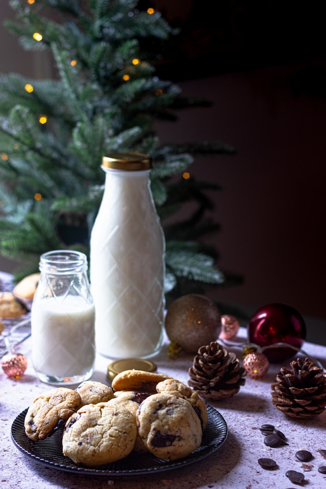

Chocolate Chip Cookies Recipe

Description:
A beloved baked treat with a chewy or crispy texture, made from butter,
sugar, flour, and studded with sweet chocolate chips.
Perfect for dessert or snacking.
Ingredients:
- 1 cup (226g) unsalted butter (softened)
- 3/4 cup (150g) white sugar
- 3/4 cup (150g) brown sugar (packed)
- 2 large eggs
- 2 tsp vanilla extract
- 2 1/4 cups (280g) all-purpose flour
- 1/2 tsp baking soda
- 1 tsp salt
- 2 cups (340g) semi-sweet chocolate chips
Steps:
- Preheat the oven: Preheat your oven to 375°F (190°C). Line a baking
sheet with parchment paper or lightly grease it.
- Mix wet ingredients: In a large bowl, cream together the softened
butter, white sugar, and brown sugar until smooth. Beat in the eggs
one at a time, then stir in the vanilla extract.
- Mix dry ingredients: In a separate bowl, combine the flour, baking
soda, and salt. Gradually add the dry mixture into the wet mixture
and stir until just combined.
- Add chocolate chips: Fold in the chocolate chips, ensuring they are
evenly distributed throughout the dough.
- Shape the cookies: Drop spoonfuls of dough (about a tablespoon each)
onto the prepared baking sheet, leaving space between each cookie.
- Bake the cookies: Bake for 9-11 minutes, or until the edges are
golden brown but the centers are still soft. Remove from the oven
and let the cookies cool on the baking sheet for a few minutes
before transferring to a wire rack to cool completely.
- Serve and enjoy: Enjoy the cookies warm or store them in an airtight
container for up to a week.